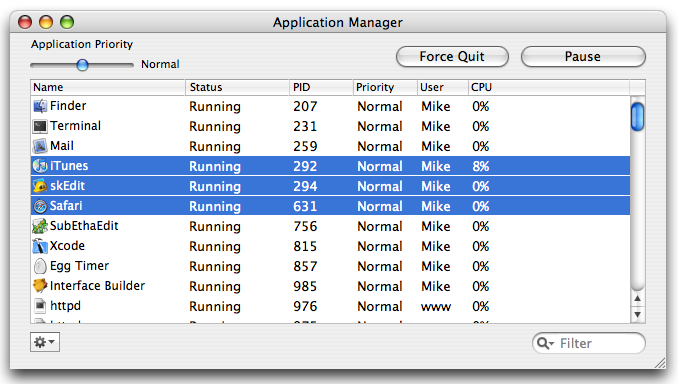

Force Quitting An Application
Force quitting (AKA as killing) applications is very easy in App Stop. Simple select the applications you want to force quit and click the "Force Quit" button.
Warning
Be careful when force quitting applications, especially applications that are owned by the root process. When you force quit an application you will lose unsaved data. Force quitting an application should only be a last resort when normal quitting of the application wont work.